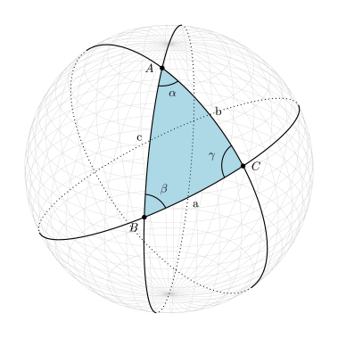
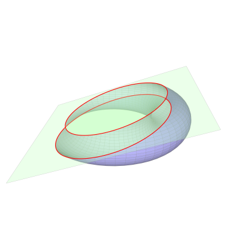
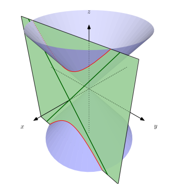
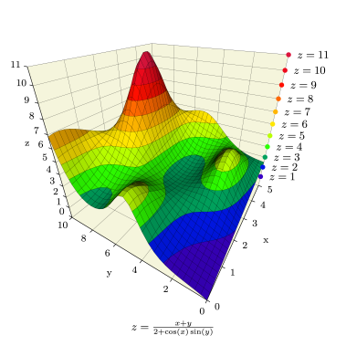
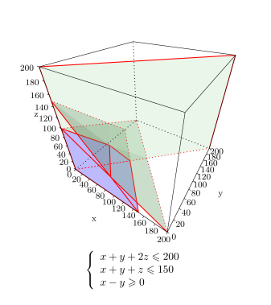

TeXgraph - Galerie 3D

Triangles sphériques

Exemple de dessin de: grillage sphérique, triangles sphériques, de cercles et de grands cercles. La gestion des pointillés est automatique. (fichier source)
Cercles de Villarceau

Cercles de Villarceau: intersection d'un tore avec un plan bitangent. (fichier source)
Section d'un cône

Exemple d'utilisation des commandes Build3D et Display3D pour gérer la section d'un cône par un plan, ainsi que l'affichage. (fichier source)
Courbes de niveaux

Voici un fichier illustrant l'utilisation du modèle CourbesNiv.mod disponible sur le sujet sur le forum, celui-ci qui permet de tracer des courbes de niveau d'une surface cartésienne d'équation $z=f(x,y)$. (fichier source)
Programmation linéaire (3D)

Ce fichier permet d'entrer par le biais d'un bouton une liste de contraintes de la forme $ax+by+cz<d$ ou $ax+by+cz>d$, et représente graphiquement le polyèdre des contraintes et les plans de contraintes. (fichier source)